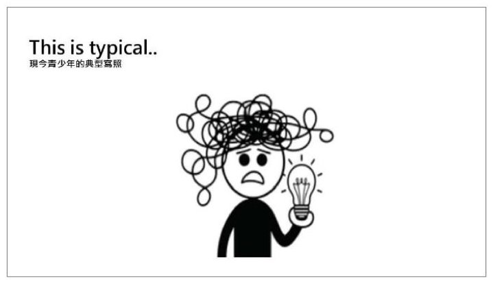
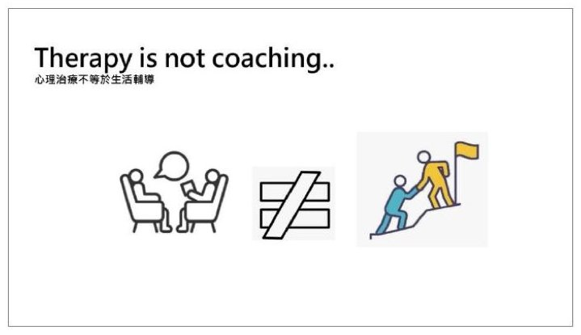
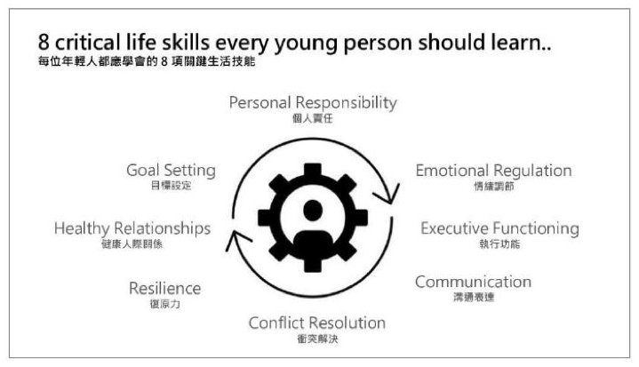
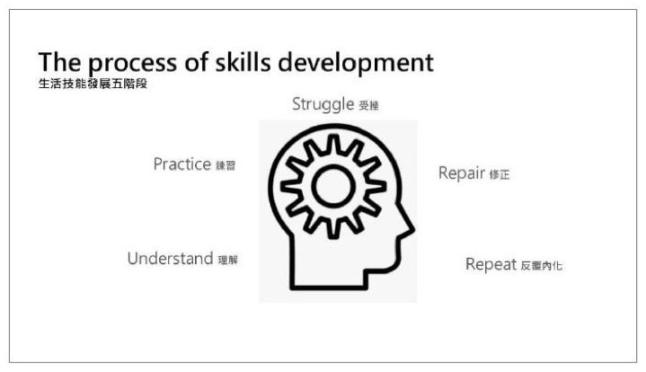

第 3 場・
從心理健康支持到生活陪跑師：日常生活技能的培養
From Mental Health to Life Skills Coach
Barry Fell
美國猶他州 Telos 北校區執行總監
治療處理卡住的地方，陪跑補上還沒長出來的能力。
Barry Fell 從一個什麼都有、卻沒辦法早上自己起床的 19 歲年輕人講起。他認為這不是個案，而是科技換掉了童年裡那些讓能力自然長出來的日常經驗。他因此提出生活陪跑：不取代心理治療，而是補上治療本來沒設計要補的那一段。
- 本場為英語演講，現場有逐步中文口譯。
- 講者最後約八分鐘在大會手冊中沒有對應的投影片。那一段談的是四個關鍵問題、兩種未來、三方協作與結語。
重點整理
01什麼都有，卻起不了床

- 他請大家想像一個 19 歲年輕人：手機、電腦、高速網路和人工智慧都有，卻沒辦法早上自己起床。
- 這樣的年輕人不是個案。二十年前會被當成重病，今天卻越來越多，而且不只發生在美國。
- 上一代的復原力、溝通與責任感，多半是在日常經驗裡自然長出來的，很少被正式教過。
02治療不等於生活陪跑

- 他先劃清界線：生活陪跑不是取代心理治療，而是補上治療本來就沒設計要補的發展斷層。
- 治療問的是什麼阻礙了健康的日常功能；陪跑問的是還有哪些技能需要被培養出來。
- 他強調問題不在科技本身，而在科技取代掉了什麼。
- 他用兩位 17 歲少年對比：一位有嚴重恐慌症、需要治療，另一位沒有診斷也沒有創傷，缺的是生活技能。
Neither is better, and both are essential.
本盟譯兩者沒有誰比較好，而且兩者都不可或缺。
03八項該學會的生活技能

- 他列出八項關鍵生活技能：情緒調節、執行功能、溝通表達、衝突解決、復原力、健康人際關係、目標設定、個人責任。
- 他補充這八項都不是精神醫療處置，而是生活能力。
- 知道不等於做得到：技能還沒變成自動反應以前，得在真實的壓力情境裡反覆練。
- 所謂壓力情境，就是手機被收走、被父母拒絕、被同儕羞辱的那些當下。
Emotional regulation, learning to experience emotions without being controlled by them.
本盟譯情緒調節，是學會去經驗自己的情緒，而不是被情緒牽著走。
04從治療走向獨立自主

- 他以一位 16 歲學生為例問：這是心理健康問題，還是生活技能問題？他的答案是：多半兩者都是。
- 轉移測試分四層：有人幫能不能做、有人提醒能不能做、能不能自己做、日子難過時還能不能做。
- 他把好的治療說成一個弔詭：不是讓孩子在我們的環境裡成功，而是讓他越來越不需要我們。
- 技能發展有五個階段：理解、練習、受挫、修正、反覆內化；目標不是沒有逆境的人生，而是養出能應付逆境的人。
Diagnosis may explain the problem, but skills create a solution.
本盟譯診斷可以解釋問題，技能才能創造出解方。
現場問答
本場無現場問答記錄。
帶走的一句
Healthy adults are not born. They are intentionally developed.
本盟譯身心健全的成年人不是天生的，是被刻意培養出來的。